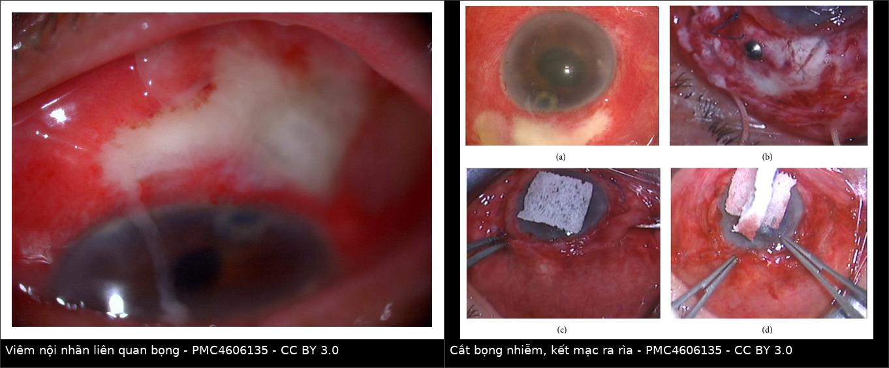
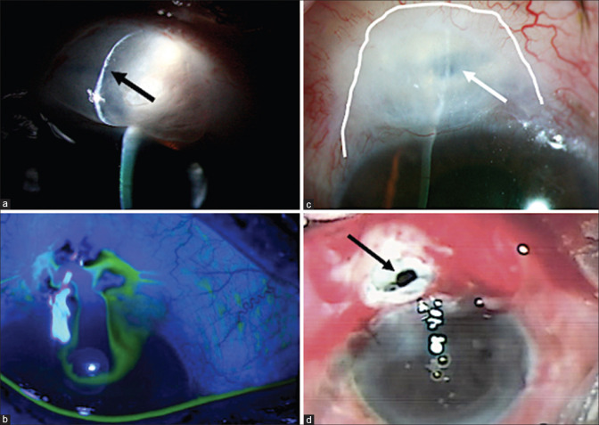
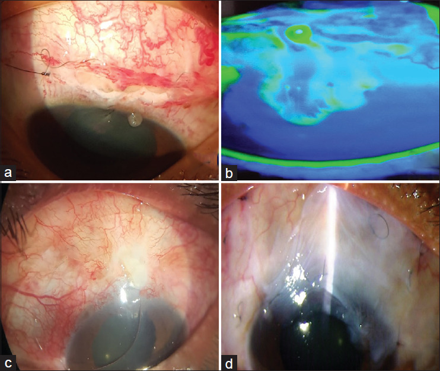
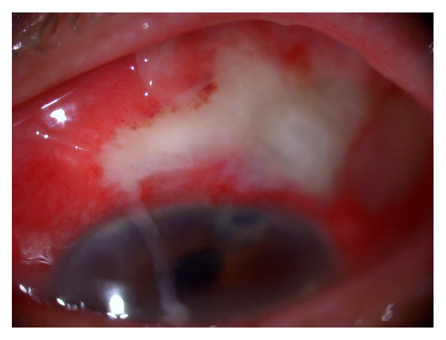
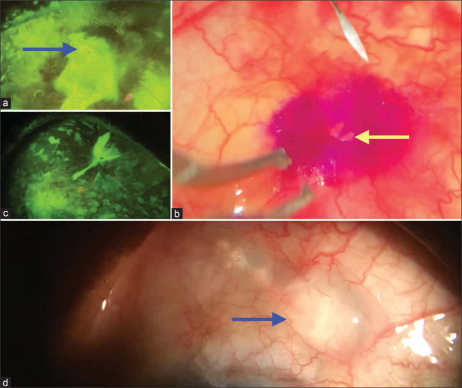

1991 — Rò bọng lọc muộn & viêm nội nhãn liên quan bọng: "mắt ướt" nào là cấp cứu / Late bleb leak and bleb-related endophthalmitis
Tags: pattern:ro-bong-loc pattern:seidel-duong pattern:bong-mong-avascular pattern:blebitis pattern:viem-noi-nhan pattern:hypotony-maculopathy pattern:mu-tien-phong vung:mat vung:ket-mac vung:tien-phong vung:the-mi protocol:seidel protocol:den-khe protocol:AS-OCT protocol:UBM protocol:tiem-noi-nhan protocol:PPV score:IOP
Mức chắc chắn (certainty): tổng hợp y văn (literature synthesis) — ghép 1 loạt 18 mắt sửa rò muộn bằng ghép củng mạc + đưa kết mạc (Pathak Ray & Badakere, Indian J Ophthalmol 2021, PMC8544101, CC BY-NC-SA 4.0), 1 tổng quan bậc thang xử lý bọng rò/quá lọc (Singh A et al., Indian J Ophthalmol 2025, PMC12013292, CC BY-NC-SA 4.0), 1 loạt 34 ca cấy dương viêm nội nhãn liên quan bọng (Ba'arah & Smiddy, Middle East Afr J Ophthalmol 2009, PMC2813581, CC BY 2.0), 1 loạt 11 mắt BRE cắt dịch kính / 2.018 mắt trab + MMC (Ohtomo K et al., J Ophthalmol 2015, PMC4606135, CC BY 3.0) và 1 ca rò ở đúng đường vào kim sau needling (Lambat SP et al., Indian J Ophthalmol 2025, PMC12507186, CC BY-NC-SA 4.0). Chỗ suy luận được ghi rõ "suy luận"; chỗ y văn chưa có số cho người Việt ghi "chưa rõ".
Vì sao bài này quan trọng: sau trabeculectomy, mắt "ướt" là dấu chứ không phải phiền toái: một lỗ rò nhỏ trên bọng mỏng không mạch là cửa vào trực tiếp của vi khuẩn vào tiền phòng–dịch kính. Cùng một triệu chứng "chảy nước mắt, hơi đỏ, hơi mờ" có thể là rò lành tính tự bịt hoặc khởi đầu của viêm nội nhãn mất thị lực trong 24–48 giờ. Bài trả lời 3 câu: (1) rò thật hay chỉ là bọng "toát mồ hôi"? (2) đã nhiễm chưa? (3) bậc thang nào, và khi nào phải mổ thay vì theo dõi? Nối 1983 (phaco phá bọng) và 1425 (viêm nội nhãn sau tiêm).
1. Tổng quan bệnh học – cơ chế hình ảnh: vì sao bọng rò thì nhãn áp tụt, và vì sao tụt áp rồi nhiễm
1.1 Cân bằng thủy dịch: một lỗ 0,1 mm đủ làm sập nhãn áp
- Phương trình Goldmann (sinh lý kinh điển): IOP = F/C + P_v, với F lưu lượng tạo thủy dịch ≈ 2,5–3 µL/phút, C hệ số thoát ≈ 0,22–0,30 µL/phút/mmHg, P_v áp lực tĩnh mạch thượng củng mạc ≈ 8–10 mmHg. Nhãn áp không phải "lượng nước" mà là "sức cản": trabeculectomy hạ áp vì tạo thêm một đường thoát có sức cản gần bằng 0.
- Vì sao rò làm IOP sụp chứ không "hạ vừa": một điểm rò 0,1 mm đã có tiết diện lớn hơn nhiều lần so với đường thoát sinh lý đang bị bít; nước thoát theo chênh áp, nên khi có "van mở" cố định, áp trong mắt chỉ còn đủ để thắng sức căng bề mặt + trở lực của lỗ. Kết quả là IOP 0–6 mmHg, không phải 12–14 mmHg. Trong loạt 18 mắt rò muộn: IOP trước sửa 6,3 ± 3,8 mmHg (khoảng 1–14 mmHg), 66,7% (12/18) có IOP ≤ 6 mmHg kèm bệnh hoàng điểm do hạ nhãn áp (PMC8544101).
- Nghịch lý "rò mà IOP 12–14 mmHg" có thật: trong cùng loạt trên, 3 mắt rò kín đáo vẫn Seidel dương dù IOP đã 12–14 mmHg sau needling — vì lỗ rò rất nhỏ, thoát chậm, và trở lực phần còn lại của bọng còn cao. Bài học: IOP bình thường KHÔNG loại trừ rò (xem mục 5).
1.2 Vì sao MMC sinh ra đúng loại bọng dễ rò: mỏng, không mạch, "vòng thép"
- Mitomycin C (MMC) alkyl hóa DNA, ức chế nguyên bào sợi cả pha nghỉ lẫn pha chia, mạnh hơn 5-FU ~100 lần về ức chế tăng sinh nguyên bào sợi (PMC12013292). Hệ quả mong muốn: ít xơ dưới kết mạc → bọng thoát tốt, bền. Hệ quả không mong muốn: biểu mô kết mạc mỏng, giảm tế bào đài, mất mạng mạch nuôi.
- Cơ chế rò theo thời gian (barotrauma): bọng mỏng chịu áp lực thủy dịch đập theo nhịp + ma sát mi khi chớp + tăng áp do Valsalva → biểu mô mỏng dần rồi thủng điểm (pinpoint breakdown). Vùng MMC khu trú tạo "ring of steel" — vòng xơ cứng ở rìa bọng giữ nước lại, làm trung tâm bọng căng và mỏng nhất (đúng nơi thủng). Khi lớp kết mạc mất, củng mạc bên dưới cũng tiêu (scleral melt) và tạo dò củng mạc thật (scleral fistula) — trong 18/18 mắt của loạt sửa rò, tất cả đều có dò củng mạc toàn lớp khi mổ (PMC8544101).
- Tần suất (số phải nhớ): rò bọng sau trab có antimetabolite 1,8–12,9%; rò muộn 3–13%; MMC gây rò gấp ~3 lần 5-FU (PMC12013292). Trong nghiên cứu 5 năm trab + MMC của Bindlish (được PMC8544101 dẫn): 15,6% rò muộn, xuất hiện sau trung bình 27,9 ± 24,6 tháng. Trong loạt sửa rò: thời gian từ trab đến rò 96 ± 64,4 tháng (trung vị 85 tháng, khoảng 19–228 tháng) — tức rò muộn có thể đến sau 19 NĂM, không có mốc "hết nguy cơ".
- Vì sao vẫn có ca bọng rò dù kỹ thuật tốt: chính tác giả loạt 18 mắt ghi nhận chỉ 5/18 ca do chính mình mổ, ước tính ~1 ca rò / ~300 ca mổ lọc khi áp dụng Moorfields Safer Surgery System (MMC 0,4 mg/mL × 2 phút, áp lan tỏa nhiều miếng, vạt kết mạc nền fornix, vạt củng mạc chữ nhật) (PMC8544101). Suy luận: phần lớn rò đến từ cách áp MMC khu trú hơn là từ tay nghề mổ nói chung.
1.3 Vì sao rò thành viêm nội nhãn: đường vào, vi khuẩn, và tốc độ
- Đường vào: lỗ rò là lỗ thông cơ học giữa túi kết mạc (nơi có hệ vi khuẩn chí của mí, túi lệ, kính tiếp xúc) và tiền phòng. Không có hàng rào nào ở giữa. Vì vậy rò bọng là yếu tố nguy cơ được ghi nhận của viêm nội nhãn liên quan bọng (bleb-related endophthalmitis, BRE): trong loạt BRE cắt dịch kính, 7/11 mắt (64%) có rò bọng ngay lúc khởi phát (PMC4606135); trong loạt 34 ca cấy dương, 12% có rò vết mổ, 29% có "vitreous wick" (dải dịch kính lòi ra qua lỗ rò) (PMC2813581).
- Vi khuẩn: Streptococcus đứng đầu (55% dịch kính; S. viridans và S. faecalis mỗi loại 18,2%), rồi tụ cầu coagulase âm (20%), đa khuẩn 27% — cao hơn hẳn 9,3% của viêm nội nhãn sau phaco trong nghiên cứu EVS (PMC2813581). Ở loạt Nhật, 55% là vi khuẩn độc lực cao (HPB: Streptococcus, Enterococcus faecalis, Gram âm) và HPB là yếu tố tiên lượng thị lực xấu duy nhất có ý nghĩa (p = 0,031; thị lực cuối logMAR 4,0 ở nhóm HPB vs 0,7 ở nhóm không HPB) (PMC4606135).
- Tần suất BRE: 0,2–1,3% chung; tới ~3% khi dùng antimetabolite; tới 9,4% khi bọng đặt ở nửa dưới (không được mi che) (PMC2813581). Đa trung tâm Nhật: nhiễm liên quan bọng tích lũy 2,2% trong 5 năm, và 14,3% các ca nhiễm đó cần cắt dịch kính (PMC4606135 dẫn). Y văn cũng dẫn tần suất năm 1,1–5,4% — chưa rõ con số cho Việt Nam.
- Thời điểm: trung bình 51,5 ± 58 tháng sau mổ lọc, khoảng 0,03–249,3 tháng; 15% khởi phát < 2 tuần (PMC2813581). Loạt Nhật: 7,4 năm (1–16 năm) (PMC4606135). Kết luận thực hành: theo dõi vô thời hạn, không "ổn định 1 năm là xong".
- Vì sao mất thị lực nặng: độc tố liên cầu + tụ mủ dịch kính + hoại tử võng mạc nhanh; trong loạt 34 ca: chỉ 47% đạt ≥ 20/400, 24% không còn nhận thức ánh sáng, 21% phải múc/ảnh nhãn cầu (PMC2813581).
1.4 Vì sao đèn khe NHÌN THẤY dòng rò (vật lý quang học)
- Fluorescein hấp thụ ánh sáng xanh 465–490 nm và phát xanh lá 520–530 nm. Một giọt dày trên kết mạc bị nội lọc (quenching) và hiện vàng–cam; khi thủy dịch trong pha loãng và rửa trôi lớp fluorescein, nó thành màng cực mỏng → phát xanh rực. Vì vậy dòng xanh chảy ra từ một điểm không chỉ là "thuốc nhuộm" mà là bằng chứng của dòng nước: hướng và tốc độ dòng xanh = hướng và lưu lượng rò.
- Vì sao cần đèn cobalt + kính lọc chắn vàng: kính chắn cắt ánh kích thích xanh phản xạ, chỉ cho huỳnh quang xanh lá đi vào mắt người khám → tương phản tăng nhiều lần; nếu không có kính lọc, dòng rò rất mờ bị "chìm" trong ánh xanh.
- Vì sao phải đợi ≥ 15 giây: rò chậm chỉ cho một vệt mỏng, lan chậm; tác giả loạt 18 mắt ghi rõ "phải quan sát ít nhất 15 giây sau khi áp thanh fluorescein ướt" — nhiều ca bỏ sót vì nhìn lướt (PMC8544101).
- Vì sao thấy "vùng xám" dưới kết mạc mỏng = củng mạc đã tiêu: củng mạc mỏng/khuyết để sắc tố hắc mạc–thể mi lộ qua; trên lát cắt quang học ở độ phóng đại cao thấy một chỗ lõm. Đây là dấu tiên lượng cần ghép củng mạc, không chỉ khâu kết mạc.
- Vì sao hypotony làm hoàng điểm nhăn: khi IOP rất thấp, thành củng mạc mất sức căng → hắc mạc–võng mạc dư thừa tương đối → nếp gấp hoàng điểm, nhìn trên OCT là nếp gấp hắc mạc–võng mạc; thị lực giảm dù đáy mắt "không có bệnh võng mạc". Trong loạt sửa rò, 66,7% mắt có tình trạng này và hồi phục sau khi bịt rò, nhưng 22,3% còn nếp gấp tồn dư dù thị lực cải thiện (PMC8544101).
1.5 Vì sao mắt nhiễm lại "trắng đục" mà không phải lúc nào cũng có mủ tiền phòng
- Bọng trắng đục = thấm nhập bạch cầu + fibrin + hoại tử biểu mô tại chỗ nhiễm; đây là dấu sớm và đáng tin hơn mủ tiền phòng.
- Mủ tiền phòng chỉ có ở 53% ca BRE cấy dương (kích thước trung bình 0,57 ± 0,67 mm) (PMC2813581) — vì phản ứng có thể khu trú ở bọng/dịch kính, hoặc đã bị rửa bớt khi rò mạnh. Suy luận: "không có mủ tiền phòng" là lý do hay làm trễ chẩn đoán nhất.
- Vì sao phân biệt với blebitis quan trọng: blebitis = nhiễm giới hạn ở bọng/tiền phòng (bọng trắng, tiền phòng có phản ứng, KHÔNG có viêm dịch kính); BRE = đã có viêm dịch kính (thấy mờ đỏ ánh đồng tử, giảm thị lực, đau nhiều). Ranh giới này quyết định nhỏ thuốc + theo dõi 24 giờ hay chọc dịch kính + cắt dịch kính.
2. Mẫu hình + chẩn đoán phân biệt theo thời điểm và theo lưu lượng (gamut)
Ba câu hỏi với mọi mắt có bọng "ướt": (1) rò thật hay chỉ "toát mồ hôi"? (2) IOP bao nhiêu và tiền phòng có nông? (3) đã có dấu hiệu nhiễm (bọng trắng + viêm dịch kính)?
- Theo thời điểm:
- Rò sớm (≤ 3 tháng, thường ≤ 1 tháng): do chấn thương kết mạc khi mổ, thủng kết mạc (buttonhole), hở mép vạt, chỉ khâu bung; y văn ghi 0–30% (PMC12013292). Hình ảnh: hở dọc mép vạt, rò thành dòng, tiền phòng nông.
- Rò muộn (> 3 tháng, đỉnh 1–19 năm): do bọng mỏng không mạch + barotrauma → thủng điểm → dò củng mạc; 3–13% sau có antimetabolite (PMC12013292). Hình ảnh: bọng dạng nang, treo lệch (overhanging), "ring of steel", điểm thủng tí xíu. Đây là kiểu rò của bài này.
- Theo lưu lượng (quyết định xử trí):
- Toát mồ hôi (sweating bleb) — thấm dịch lan tỏa qua thành bọng, không có một điểm phun; Seidel có thể dương lan tỏa hoặc âm. Bản chất là quá lọc (over-filtration), không phải lỗ thủng; loạt sửa rò loại trừ nhóm này vì cách xử lý khác (PMC8544101).
- Rò điểm (point leak) — một điểm Seidel dương, có dòng xanh rõ; thường IOP thấp–rất thấp.
- Rò thành dòng (brisk leak) — nước chảy thành tia, tiền phòng nông–dẹt, nguy cơ hội chứng tiền phòng nông – hắc mạc tràn dịch, cần mổ sớm.
- Theo IOP: rò IOP bình thường (12–14 mmHg) / rò hạ nhãn áp (≤ 6 mmHg) / bệnh hoàng điểm do hạ nhãn áp (nhăn hoàng điểm, thị lực giảm).
- Theo nhiễm: bọng mỏng không nhiễm → blebitis (bọng trắng + phản ứng tiền phòng, không viêm dịch kính) → BRE (viêm dịch kính).
- Gamut "mắt đỏ đau sau trabeculectomy" (bắt buộc loại trừ): BRE · blebitis · viêm màng bồ đào sau mổ · thiếu biểu mô giác mạc do BCL · rò vết mổ giác mạc hoặc hở vạt · hội chứng tiền phòng nông do quá lọc · viêm nội nhãn sau needling · viêm củng mạc.
- Gamut "IOP thấp sau trabeculectomy": quá lọc · rò bọng · khe thể mi (cyclodialysis cleft) · "tắt" thể mi do thuốc/viêm (ciliary shutdown) · bong võng mạc · teo nhãn cầu · van dẫn lưu quá thoát.
3. Bảng so sánh phân biệt (ma trận đối chiếu)
| Thực thể (entity) | Hình ảnh điển hình (đèn khe / AS-OCT / UBM) | Chốt vào (rule-in) | Chốt loại (rule-out) | Gợi ý xác nhận |
|---|---|---|---|---|
| Rò bọng muộn do dò củng mạc | Bọng dạng nang, treo, thành cực mỏng, không mạch, "ring of steel"; điểm thủng tí xíu; vùng xám dưới kết mạc | Seidel dương ≥ 15 giây từ MỘT điểm + IOP ≤ 6 mmHg + bọng mỏng không mạch nhiều năm sau trab | Seidel âm + bọng còn vi nang + thành dày → không phải rò | Đèn khe cobalt + kính vàng; chụp ảnh/video dòng rò; AS-OCT đo độ dày thành |
| Bọng "toát mồ hôi" quá lọc (sweating) | Bọng ca, căng, lan tỏa, không có điểm phun; tiền phòng có thể nông; AS-OCT: khoang dịch rộng, thành không khuyết | Thấm dịch lan tỏa toàn thành bọng + không xác định được một điểm rò | Một điểm xanh rõ + lỗ nhìn thấy → rò điểm | Seidel lan tỏa; IOP; thử băng ép 24 giờ |
| Blebitis (nhiễm khuẩn khu trú bọng) | Bọng trắng đục, quanh bọng xung huyết, có thể mủ tiền phòng nhẹ; KHÔNG viêm dịch kính | Bọng trắng + đau + phản ứng tiền phòng nhưng ánh đồng tử còn đỏ, thấy rõ đáy mắt | Viêm dịch kính (mất ánh đỏ, không thấy chi tiết) → BRE | Đèn khe + soi đáy mắt; theo dõi 24 giờ sau kháng sinh |
| Viêm nội nhãn liên quan bọng (BRE) | Bọng trắng, tiền phòng mủ (chỉ 53%), viêm dịch kính, có thể vitreous wick; đau nhiều | Bọng trắng + viêm dịch kính + giảm thị lực nhanh (giờ–ngày) + rò bọng | Đáy mắt thấy rõ, không viêm dịch kính → blebitis; chỉ đau không mờ → tìm nguyên nhân khác | Chọc tiền phòng + dịch kính trước khi tiêm kháng sinh; cấy |
| Bệnh hoàng điểm do hạ nhãn áp | IOP ≤ 6 mmHg, nếp gấp hắc mạc–võng mạc ở hoàng điểm trên OCT, có thể phù gai; bọng quá lớn/rò | IOP thấp kéo dài + nếp gấp hoàng điểm + thị lực giảm không giải thích | OCT hoàng điểm bình thường → tìm nguyên nhân thị lực khác | OCT hoàng điểm; đo IOP 3 lần; tìm rò/khe |
| Rò ở đường vào kim sau needling | Bọng còn cao, một hoặc hai lỗ nhỏ ở ĐIỂM VÀO KIM (phía sau bọng), khó thấy dưới kính hiển vi; IOP 0 mmHg | Tiền sử needling gần đây + IOP rất thấp + Seidel dương ở vị trí đường vào kim | Rò ở đỉnh bọng → cơ chế dò củng mạc khác | Nhuộm kết mạc bằng bút dạ phẫu thuật để lộ 2 lỗ; thử băng ép 24 giờ trước |
| Khe thể mi (cyclodialysis cleft) | Bọng có thể bình thường/không có; tiền phòng sâu, IOP thấp; UBM/AS-OCT thấy tách thể mi–củng mạc | IOP thấp + tiền phòng SÂU + không tìm được rò + tiền sử chấn thương/MIGS | Seidel dương rõ ở bọng → rò là nguyên nhân | Gonioscopy + UBM; xem 1962, 1447 |
| Rò vết mổ giác mạc sau phaco | Vết rạch giác mạc hở, tiền phòng nông, Seidel ở rìa giác mạc chứ không ở bọng | Seidel dương tại vết rạch + tiền sử phaco gần đây | Seidel chỉ ở bọng → rò bọng | Đèn khe; khâu lại vết rạch nếu hở |
| Viêm màng bồ đào sau mổ (vô khuẩn) | Tiền phòng có tế bào + flare, bọng không trắng, không viêm dịch kính, đáp ứng corticoid | Đáp ứng nhanh corticoid + bọng trong + không rò | Bọng trắng đục + không đáp ứng corticoid sau 24 giờ → nhiễm | Thử corticoid; cấy nếu không cải thiện |

Trái: bọng trắng đục lan rộng, xung huyết kết mạc, tiền phòng mờ — BRE. Phải: (a) trước mổ; (b) cắt bỏ bọng nhiễm sau cắt dịch kính; (c) đưa kết mạc ra che vạt củng mạc; (d) khâu kết mạc vào rìa bằng chỉ nylon 10-0. Nguồn: Ohtomo K et al., J Ophthalmol 2015 (PMC4606135), CC BY 3.0. Ảnh ghép letterbox, không crop.Ba dấu hiệu chốt trên đèn khe (đọc theo thứ tự)
- Nhìn thành bọng ở lát cắt quang học: mỏng như giấy + không mạch + treo lệch = bọng nguy cơ; vùng xám lõm dưới kết mạc = củng mạc đã tiêu.
- Seidel có kính lọc vàng, đợi ≥ 15 giây: dòng xanh từ một điểm = rò điểm; xanh lan tỏa = toát mồ hôi.
- Soi đáy mắt qua đồng tử: còn ánh đỏ và thấy rõ chi tiết = chưa viêm dịch kính; mất ánh đỏ, chỉ thấy đỏ mờ = BRE cho đến khi chứng minh ngược.
4. Protocol chụp – khám + hệ phân độ và bậc thang xử trí
4.1 Seidel test chuẩn hóa (5 bước, làm đúng thứ tự)
- Không ấn nhãn cầu, không kéo mi mạnh trước khi đọc (ấn sẽ đẩy thủy dịch ra và tạo dòng rò giả).
- Thanh fluorescein 0,6 mg làm ướt bằng nước muối, chấm nhẹ lên kết mạc sát bọng (không chấm lên đỉnh bọng nếu bọng quá mỏng).
- Đèn khe cobalt xanh + kính lọc chắn vàng, độ phóng đại 10–16×, bệnh nhân nhìn xuống, mi trên để tự nhiên.
- Quan sát liên tục ≥ 15 giây ở cả 4 hướng quanh bọng; bệnh nhân chớp vài lần để bắt rò "theo nhịp" (rò chỉ xuất hiện khi có dòng).
- Ghi lại bằng ảnh/video cùng góc, cùng đèn; đo IOP (ghi loại nhãn áp kế), độ sâu tiền phòng (đèn khe hoặc AS-OCT), tìm Seidel ở vết rạch và vitreous wick.
4.2 Phân độ lưu lượng rò (dùng để chọn bậc điều trị)
| Độ | Mô tả trên đèn khe | IOP điển hình | Nguy cơ | Hướng xử trí |
|---|---|---|---|---|
| R0 — toát mồ hôi | Thấm dịch lan tỏa, không điểm phun | 4–10 mmHg | Quá lọc, hypotony mạn | Giảm tiết thủy dịch, băng ép, BCL, cân nhắc máu tự thân/khâu ép |
| R1 — rò điểm chậm | Một điểm xanh, dòng mảnh, cần đợi ≥ 15 giây | 5–14 mmHg | Nhiễm, hypotony tiến triển | BCL + kháng sinh + giảm tiết; nếu không bịt sau 7–15 ngày → can thiệp |
| R2 — rò điểm nhanh | Dòng xanh rõ, chảy liên tục | 0–6 mmHg | BRE, hắc mạc tràn dịch, hoàng điểm nhăn | Mổ sớm: ghép củng mạc + đưa kết mạc |
| R3 — rò thành dòng | Nước chảy thành tia, tiền phòng nông/dẹt | 0–3 mmHg | Mù do hypotony, nhiễm | Mổ ngay, hồi sức tiền phòng |
4.3 Bậc thang điều trị (từ ít xâm lấn → mổ) và con số kết quả
- Bậc 1 — nội khoa: giảm tiết thủy dịch (chẹn beta, đồng vận alpha, ức chế carbonic anhydrase) để giảm dòng qua lỗ rò; TRÁNH prostaglandin (hoạt hóa metalloproteinase → làm mỏng thêm thành bọng) (PMC12013292); ngưng corticoid tại chỗ; kháng sinh dự phòng; băng ép từng ngày; dặn tránh Valsalva/rặn.
- Bậc 2 — kính tiếp xúc băng (BCL): đường kính 17–20,5 mm, dùng 7–15 ngày, thay/tháo để kiểm tra rò định kỳ. Hiệu quả nhất ở rò sớm (PMC12013292).
- Bậc 3 — thuốc/hóa chất tại chỗ: doxycycline 100 mg × 2/ngày × 1 tuần (rò sớm); keo cyanoacrylate hoặc fibrin; laser argon sau nhuộm xanh methylene/rose bengal để gây xơ (PMC12013292).
- Bậc 4 — can thiệp ít xâm lấn: máu tự thân vào bọng (ABI) 0,1–0,2 mL — thành công 50–60%; chỉ khâu ép xuyên kết mạc 9-0 nylon — 64–69% (PMC12013292), phù hợp bọng mỏng thiếu máu không có lỗ thủng thật.
- Bậc 5 — mổ: vạt kết mạc (advancement/rotational) 50–60%; ghép củng mạc toàn lớp 3 × 2,5 mm + đưa kết mạc ra rìa (5 mối chỉ: 4 mối góc + 1 mối mattress ở rìa) — thành công 83,3% (hoàn toàn 72,2%, có thuốc 11,1%), không ca nào rò tái phát trong 52,4 ± 26,9 tháng; IOP 6,3 → 12,1 mmHg, thị lực logMAR 0,8 → 0,4 (PMC8544101). Kỹ thuật Maumenee (xoay vạt củng mạc tự thân) khi không có củng mạc ghép.
- Lưu ý sau mổ: IOP cao nhất ở mốc 6 TUẦN (do bọng đã dày lên), 27,8% cần cắt chỉ bằng laser; đừng gọi là thất bại khi IOP 20 mmHg ở tuần 6 mà bọng còn chức năng (PMC8544101).
4.4 Viêm nội nhãn liên quan bọng: protocol cấp cứu
- Chẩn đoán là cấp cứu: không chờ cấy. Chọc tiền phòng + chọc dịch kính (hoặc dịch kính lấy được trong lúc cắt) trước khi tiêm kháng sinh.
- Kháng sinh nội nhãn: vancomycin 1 mg/0,1 mL + ceftazidime 2,25 mg/0,1 mL; thêm dexamethasone 0,4 mg (dùng ở 56% ca trong loạt 34 ca) (PMC2813581). Kháng sinh đường toàn thân không thường quy (chỉ 14% ca).
- Khi nào cắt dịch kính (PPV): viêm dịch kính đặc, thị lực ≤ đếm ngón tay, hoặc không cải thiện sau 24–48 giờ; không có bằng chứng PPV trội hơn chọc–tiêm ở mọi ca (≥ 20/400: 33% với PPV vs 50% không PPV, p = 0,45), nhưng 59% ca trong loạt cuối cùng đã phải PPV vì diễn tiến (PMC2813581).
- Trong lúc PPV: cắt bỏ bọng nhiễm + đưa kết mạc ra che vạt củng mạc — được khuyến nghị vì rò là yếu tố nguy cơ tái phát và nhiễm bọng tái phát cao nếu để bọng cũ (PMC4606135).
- Tiên lượng nói với gia đình bằng số: 47% đạt ≥ 20/400, 24% NLP, 21% phải mút/ảnh nhãn cầu (PMC2813581); thị lực cuối logMAR trung vị 0,82 khi PPV, nhưng logMAR 4,0 nếu vi khuẩn độc lực cao (PMC4606135).
- Sau khi qua nhiễm: 64% kiểm soát IOP không cần thuốc, 18% vẫn > 21 mmHg dù có thuốc — cần kế hoạch hạ áp riêng (PMC4606135).
4.5 Dự phòng (phần quyết định tỉ lệ mù của cả bệnh)
- Kỹ thuật áp MMC: 0,4 mg/mL × 2 phút, áp lan tỏa bằng nhiều miếng xốp, vạt kết mạc nền fornix, vạt củng mạc chữ nhật (Moorfields Safer Surgery System) → giảm bọng nang mỏng — ước ~1 rò/300 ca ở loạt của tác giả (PMC8544101).
- Vị trí bọng: tránh đặt bọng ở nửa dưới (không được mi che, dễ nhiễm; nguy cơ tới 9,4%) (PMC2813581).
- Theo dõi: khám bọng mỗi lần tái khám, vô thời hạn; dặn bệnh nhân quay lại ngay khi đau mắt, đỏ, chảy nước mắt, nhìn mờ — vì 15% BRE khởi phát < 2 tuần và 24% mất hoàn toàn thị lực.
- Sau needling: kiểm tra Seidel ở ĐIỂM VÀO KIM (xem mục 5) — đây là vị trí rò hay bị bỏ sót nhất.
flowchart TD
A["Mat co bong loc: chay nuoc mat, do, nhin mo"] --> B{"Bong trang duc + viem dich kinh?"}
B -->|Co| C["VIEM NOI NHAN LIEN QUAN BONG: chop tien phong + dich kinh roi tiem noi nhan ngay"]
C --> C1["Vancomycin 1 mg + ceftazidime 2,25 mg + dexamethasone 0,4 mg"]
C1 --> C2{"Viem dich kinh dac hoac khong cai thien sau 24-48 gio?"}
C2 -->|Co| C3["Cat dich kinh + cat bong nhiem + dua ket mac ra ria"]
C2 -->|Khong| C4["Theo doi 24 gio: thi luc, tien phong, day mat"]
B -->|Khong| D{"Seidel duong sau it nhat 15 giay?"}
D -->|Khong| E["Tim nguyen nhan khac: khe the mi, qua loc, viem mang bo dao, ro vet rach giac mac"]
D -->|Co| F{"Bong con mot diem ro hay toat mo hoi lan toa?"}
F -->|Toat mo hoi| G["Giam tiet thuy dich + khang sinh + ngung corticoid + bang ep + BCL"]
F -->|Mot diem ro| H{"Tien phong nong hoac IOP duoi 6 mmHg?"}
H -->|Khong| I["BCL 17-20,5 mm trong 7-15 ngay + doxycycline 100 mg x 2/ngay 1 tuan"]
H -->|Co| J["Mo: ghep cung mac 3 x 2,5 mm + dua ket mac ra ria"]
G --> K{"Bit kin sau 7-15 ngay?"}
I --> K
K -->|Khong| J
K -->|Co| L["Theo doi: IOP tuan 6 co the tang, cat chi laser neu can"]
5. Biến thể bình thường và cạm bẫy
- "Bọng ướt" không phải lúc nào cũng là rò. Bọng còn vi nang, thành mỏng nhưng không khuyết, không mạch bất thường có thể đổ mồ hôi nhẹ khi trời lạnh/chớp mạnh — Seidel âm, IOP ổn định = biến thể lành; đừng bắt đầu bậc thang điều trị chỉ vì "nhìn ướt".
- Cạm bẫy số 1 — bỏ sót rò chậm: rò chậm chỉ hiện sau 10–15 giây với một vệt xanh mảnh, và IOP có thể 12–14 mmHg; trong loạt sửa rò có 3 mắt đúng tình huống này. Bắt buộc đợi ≥ 15 giây và soi đủ 4 hướng.
- Cạm bẫy số 2 — rò ở đường vào kim sau needling: ca 67 tuổi, trab rồi needling, IOP 0 mmHg, băng ép 24 giờ thất bại; dưới kính hiển vi KHÔNG thấy lỗ rò vì lỗ nằm ở điểm vào kim phía sau bọng; tác giả nhuộm kết mạc bằng bút dạ phẫu thuật → hiện 2 lỗ sát nhau và khâu được chính xác (PMC12507186). Suy luận: mọi rò sau needling phải soi cả đường vào kim, không chỉ đỉnh bọng.
- Cạm bẫy số 3 — nhầm "toát mồ hôi" với "rò điểm": hai cơ chế, hai điều trị; ghép củng mạc cho bọng toát mồ hôi là mổ oan, còn khâu ép/máu tự thân cho dò củng mạc toàn lớp thì thất bại vì không có nền củng mạc để tựa.
- Cạm bẫy số 4 — IOP cao ở tuần 6 sau sửa rò bị gọi là "thất bại": bọng sau ghép dày hơn bọng gốc; IOP cao nhất ở tuần 6; 27,8% ca cần cắt chỉ laser rồi kiểm soát tốt; chỉ 11,1% thất bại thật (PMC8544101).
- Cạm bẫy số 5 — "không có mủ tiền phòng nên chưa phải viêm nội nhãn": 47% ca BRE không có mủ; dấu chốt là bọng trắng + viêm dịch kính + giảm thị lực, không phải mủ.
- Cạm bẫy số 6 — ấn nhãn cầu khi khám/đo IOP: tạo dòng rò giả và làm IOP thấp giả; đo bằng nhãn áp kế không tiếp xúc nếu bọng rất mỏng, và ghi rõ phương pháp.
- Cạm bẫy số 7 — hắc mạc tràn dịch/tiền phòng nông sau khi bịt rò: khi bịt lỗ, trở lực tăng đột ngột; cần theo dõi tiền phòng và hắc mạc trong 1–2 tuần, không chỉ nhìn IOP.
- Biến thể bình thường cần nhớ: nếp gấp hắc mạc tồn dư sau khi IOP đã về bình thường (22,3% ca) — thị lực vẫn cải thiện; đừng mổ lại chỉ vì còn nếp gấp.
6. Tự lượng giá — Blind Quiz
Ca 1 — Nam 62 tuổi, trabeculectomy + MMC 6 năm trước; 3 tuần nay chảy nước mắt, hơi đỏ, nhìn mờ. IOP 5 mmHg, tiền phòng nông nhẹ, đáy mắt thấy rõ.

- Hỏi: (1) mô tả (a), (b), (c); (2) đây là rò hay chỉ là bọng toát mồ hôi? (3) vì sao cần mổ chứ không chỉ băng ép?
Bấm để hiện đáp án (findings + chẩn đoán)
- Dấu hiệu: (a) bọng treo lệch, thành cực mỏng, mũi tên đen chỉ điểm thủng tí xíu trên biểu mô đã mỏng; (b) Seidel dương: dòng fluorescein xanh chảy rõ thành vệt từ một điểm; (c) "ring of steel" (đường trắng ngoằn ngoèo) bao quanh vùng xám lõm — củng mạc đã tiêu/khuyết. Ca mổ tương ứng (d) cho thấy dò củng mạc toàn lớp.
- Chẩn đoán: rò bọng muộn do dò củng mạc (R2), kèm hạ nhãn áp. Không phải "toát mồ hôi" vì có một điểm phun xác định và có vùng củng mạc khuyết.
- Vì sao phải mổ: băng ép/BCL chỉ bịt được khuyết biểu mô; ở đây không còn củng mạc tựa nên không có nền để biểu mô bám — nhóm này cần ghép củng mạc + đưa kết mạc; kết quả 83,3% thành công, 0 rò tái phát trong > 4 năm (PMC8544101).
- Nguồn ảnh: Pathak Ray V & Badakere SV, Indian J Ophthalmol 2021 (PMC8544101), Fig. 1, CC BY-NC-SA 4.0 — nguyên bản.
Ca 2 — Nữ 70 tuổi, 12 ngày sau trabeculectomy; chảy nước mắt nhiều, tiền phòng nông, IOP 3 mmHg.

- Hỏi: (1) mỗi panel (a)–(d) mô tả gì? (2) đây là rò sớm hay muộn, và bậc điều trị đầu tiên? (3) khi nào bỏ BCL để mổ?
Bấm để hiện đáp án (findings + chẩn đoán)
- Dấu hiệu: (a) rò sớm do hở mép vạt (chỉ khâu bung, kết mạc lành kém) — thấy dòng dịch ở mép vạt; (b) Seidel dương ở một điểm rò khu trú (rò muộn điển hình); (c) kính tiếp xúc băng mini 18 mm phủ lên bọng rò; (d) màng ối trải lên bọng rò để biểu mô tái phủ.
- Chẩn đoán: rò sớm sau trab (trong 12 ngày) — cơ chế hở mép vạt/thủng kết mạc, khác rò muộn do dò củng mạc.
- Bậc điều trị: giảm tiết thủy dịch + kháng sinh + ngưng corticoid + băng ép, rồi BCL 17–20,5 mm trong 7–15 ngày; nếu không bịt → màng ối/keo → mổ. Bỏ BCL để mổ khi tiền phòng nông kéo dài/dẹt, rò thành dòng, IOP ≤ 3 mmHg kéo dài, hoặc nghi nhiễm (bọng trắng).
- Nguồn ảnh: Singh A, Singh K, Singh A, Indian J Ophthalmol 2025 (PMC12013292), Fig. 8, CC BY-NC-SA 4.0 — nguyên bản.
Ca 3 — Nam 65 tuổi, trab + MMC 4 năm trước; 2 ngày nay đau nhiều, nhìn mờ nhanh. Bọng trắng đục; tiền phòng có mủ 1 mm; không thấy rõ chi tiết đáy mắt.

- Hỏi: (1) ba dấu hiệu chốt? (2) blebitis hay BRE? (3) ba việc phải làm trong 1 giờ đầu và tiên lượng nói với gia đình?
Bấm để hiện đáp án (findings + chẩn đoán)
- Dấu hiệu: bọng trắng đục lan rộng (mũi tên), xung huyết kết mạc, tiền phòng mờ có mủ; không thấy chi tiết đáy mắt = viêm dịch kính.
- Chẩn đoán: viêm nội nhãn liên quan bọng (BRE) — không phải blebitis, vì đã có viêm dịch kính. Vi khuẩn hay gặp nhất là Streptococcus (55%), đa khuẩn 27% (PMC2813581).
- Ba việc trong giờ đầu: (1) chọc tiền phòng + chọc dịch kính gửi cấy trước khi tiêm; (2) tiêm nội nhãn vancomycin 1 mg + ceftazidime 2,25 mg (± dexamethasone 0,4 mg); (3) đánh giá ngay chỉ định cắt dịch kính nếu viêm dịch kính đặc/không cải thiện 24–48 giờ — và khi cắt thì cắt bỏ bọng nhiễm + đưa kết mạc ra rìa.
- Tiên lượng: 47% đạt ≥ 20/400, 24% NLP, 21% phải mút/ảnh nhãn cầu; nếu vi khuẩn độc lực cao thì thị lực cuối logMAR 4,0 dù điều trị đúng (PMC4606135).
- Nguồn ảnh: Ohtomo K et al., J Ophthalmol 2015 (PMC4606135), Fig. 1, CC BY 3.0 — nguyên bản.
Ca 4 — Nam 67 tuổi, trab rồi needling 3 tuần trước; nay IOP 0 mmHg, chảy nước mắt; băng ép 24 giờ không bịt được. Dưới kính hiển vi không thấy lỗ rò ở đỉnh bọng.

- Hỏi: (1) vì sao không thấy lỗ rò? (2) mẹo nào để tìm? (3) xử trí?
Bấm để hiện đáp án (findings + chẩn đoán)
- Dấu hiệu: (a) Seidel dương ở một điểm nhỏ, dòng xanh mảnh; (b) nhuộm kết mạc bằng bút dạ phẫu thuật (màu hồng) làm lộ HAI lỗ sát nhau (mũi tên vàng); (c) hình fluorescein xác nhận dòng rò; (d) sau khâu: bọng căng trở lại.
- Vì sao khó thấy: lỗ rò nằm ở đường vào kim phía sau bọng, không ở đỉnh bọng; bọng vẫn cao nên che khuất; rò chậm nên không thành tia.
- Chẩn đoán: rò ở điểm vào kim sau needling — biến chứng của chính thủ thuật needling (kỹ thuật needling sẽ bàn ở mục hàng chờ 1992, chưa viết).
- Xử trí: khâu chính xác hai lỗ (10-0 nylon); sau đó bọng căng lại, IOP hồi phục. Trước khi khâu: loại trừ nhiễm và đánh giá tiền phòng.
- Nguồn ảnh: Lambat SP et al., Indian J Ophthalmol 2025 (PMC12507186), Fig. 1, CC BY-NC-SA 4.0 — nguyên bản.
Bài liên quan chéo
- 1983 — Đục thể thủy tinh sau trabeculectomy & phaco trên mắt có bọng — bọng mất chức năng (hướng ngược với bài này: bọng quá thoát).
- 1425 — Viêm nội nhãn sau tiêm nội nhãn — cùng khung "chọc–tiêm", khác đường vào.
- 1447 — Rách thể mi sau MIGS/Yamane và 1962 — Rách thể mi chấn thương & góc rẽ — hạ nhãn áp không do rò.
- 1448 — Glôcôm ác tính sau mổ nội nhãn — mặt ngược lại: tiền phòng dẹt nhưng IOP cao.
- 1452 — Glôcôm do thể thủy tinh chưa mổ — tiền phòng có mủ nhưng góc mở, không nhiễm.
Ảnh
1991_ro-bong-loc_Slitlamp_PMC8544101-Fig1.jpg— bọng mỏng treo, Seidel dương, "ring of steel" + vùng xám, dò củng mạc trong mổ.1991_ro-bong-loc_Slitlamp_PMC12013292-Fig8.jpg— rò sớm hở mép vạt, Seidel rò muộn, BCL 18 mm, màng ối.1991_ro-bong-loc_Slitlamp_PMC4606135-Fig1.jpg— BRE: bọng trắng, xung huyết, tiền phòng mờ.1991_ro-bong-loc_Mo_PMC4606135-Fig2.jpg— các thì cắt bọng nhiễm + đưa kết mạc ra rìa.1991_ro-bong-loc_Slitlamp_PMC12507186-Fig1.jpg— rò ở điểm vào kim, nhuộm bút dạ lộ hai lỗ.composite_viem-noi-nhan-bong.jpg— ảnh ghép đối chiếu (BRE + thì mổ), tạo bằngtools/make_composite.py.- Nguồn + giấy phép từng ảnh:
images/CREDITS.md.
Không dùng để chẩn đoán độc lập khi chưa có người hướng dẫn.